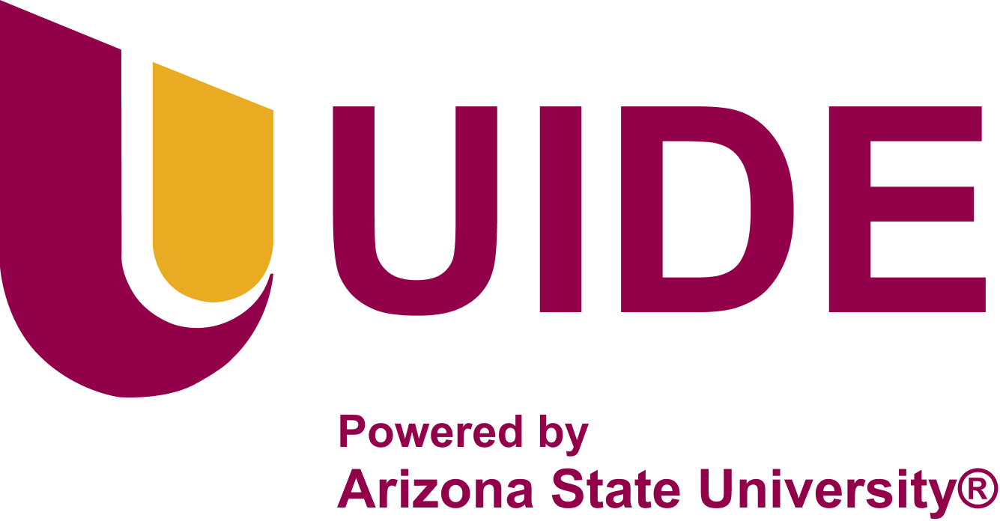

01 / 20
LTI_05A_INS · Semana 2
Antes de programar hay que entender qué construir
Crisis del software, modelos de proceso, requisitos y borrador de SRS
Ingeniería del Software · Charlie Cárdenas Toledo
02 / 20
Un sistema municipal llegó tarde, costó el doble y no se usó
03 / 20
La crisis del software se nombró en 1968
Garmisch, Alemania. Conferencia patrocinada por el comité científico de la OTAN.
TardeLos proyectos se entregaban con demora
Más carosCostaban más de lo esperado
Poco confiablesFallaban con frecuencia
No cumplíanNo estaban a la altura de lo que esperaban los usuarios
Los enfoques individuales no escalaban a sistemas grandes.
04 / 20
Cada síntoma de la crisis tiene una causa y una respuesta
05 / 20
En cascada, cada fase termina antes de empezar la siguiente
06 / 20
El incremental entrega por partes y aprende de cada una
07 / 20
El espiral decide por riesgo en cada vuelta
08 / 20
Los tres modelos responden a situaciones distintas
09 / 20
Tres criterios deciden qué modelo conviene a un proyecto
10 / 20
Un requisito dice qué hace el sistema o cómo lo hace
11 / 20
Un requisito se verifica con métrica y umbral
12 / 20
Cada categoría de requisito no funcional se mide distinto
13 / 20
Cada técnica de elicitación descubre algo distinto
14 / 20
Una buena entrevista va del contexto a las excepciones
15 / 20
Una historia de usuario tiene rol, acción y beneficio
16 / 20
Una historia se revisa con las seis letras de INVEST
17 / 20
MoSCoW separa lo imprescindible de lo deseable
18 / 20
Un SRS ordena lo que se sabe y muestra lo que falta
19 / 20
Esta semana hay tres actividades
GA-1.2 · 1 puntoRequisitos priorizadosClasificados, verificables y con prioridad MoSCoW
PE-1.2 · 2 puntosHistorias de usuarioGuion de entrevista, tres historias con criterios e INVEST
TA-1.2 · 2 puntosDiseño de SRSBorrador de SRS y el Módulo 2 de ASU Inclusive Mindset
20 / 20
Un buen requisito se puede comprobar antes de programar
Ahora, la práctica: guion de entrevista, tres historias e INVEST
Fuentes: Sommerville (2011) · Pressman y Maxim (2020)